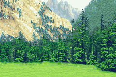
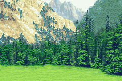

Ending 4: You Found the Beanstalk
 

Eventually, as you trail onward, you find a giant beanstalk in a hole on this land. You begin to climb down the beanstalk to make your way down to the land below.
You finally reach the back down to the lower lands, and everything looks normal. You don't know where you are, but you do know you're by a highway. You eventually to hitchhike a ride back to society.